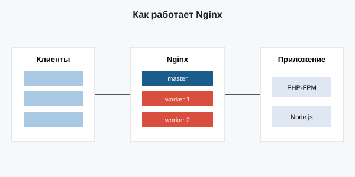

Веб-сервер Nginx
Nginx — свободный веб-сервер и обратный прокси, созданный Игорем Сысоевым в 2004 году. Он был придуман как решение проблемы Apache: тот плохо справлялся с большим числом одновременных соединений.
Как устроен Nginx
Nginx использует событийную модель. Запускается один
главный процесс (master) и несколько рабочих
(worker). Каждый worker умеет обслуживать тысячи
соединений одновременно, не создавая отдельный процесс под каждое.

Плюсы Nginx
- быстро обрабатывает много соединений;
- мало расходует память;
- хорошо отдаёт статику;
- умеет балансировать нагрузку;
- перезагружает конфиг без простоя.
Пример конфигурации
server {
listen 80;
server_name example.com;
root /var/www/example;
index index.html index.php;
# статические файлы
location ~* \.(jpg|png|css|js)$ {
expires 30d;
}
# передача PHP в PHP-FPM
location ~ \.php$ {
include fastcgi_params;
fastcgi_pass unix:/run/php/php8.2-fpm.sock;
fastcgi_param SCRIPT_FILENAME $document_root$fastcgi_script_name;
}
}Балансировка нагрузки
upstream backend {
server 10.0.0.1:8080;
server 10.0.0.2:8080;
}
server {
listen 80;
location / {
proxy_pass http://backend;
}
}
Часто Nginx ставят перед Apache: Nginx отдаёт статику,
Apache — динамику. Подробнее в разделе
«Сравнение».